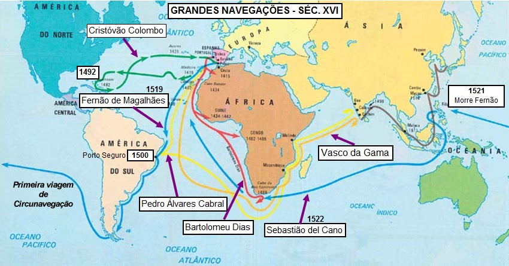

Entre os séculos XV e XVI, as nações europeias lançaram-se ao Atlântico em busca de novas rotas comerciais, interligando pela primeira vez os continentes europeu, americano, africano e asiático.
Sistema econômico da Idade Moderna caracterizado pela forte intervenção do Estado, baseado no Metalismo (acumulação de ouro e prata), na Balança Comercial Favorável e na Acumulação Primitiva de Capital.
Questão 1
Considerando os fatores determinantes do
pioneirismo ibérico, assinale a alternativa que explica corretamente a
estratégia inicial adotada por Portugal:
A) Imediata colonização do território norte-americano.
B)
Financiamento de expedições terrestres transasiáticas.
C) O
contorno da costa africana (Périplo Africano) para estabelecer uma nova
rota marítima em direção às Índias.
D) Substituição total das
embarcações a vela por navios a vapor.
Questão 2
A partir da dinâmica mercantilista, a
principal função econômica das colônias dentro do sistema colonial era:
A) Desenvolver uma economia industrial autônoma e tecnológica.
B)
Atuar como complementos da economia metropolitana, fornecendo gêneros
primários e servindo de mercado consumidor para as manufaturas
europeias.
C) Garantir soberania militar democrática aos
nativos.
D) Promover o livre-comércio irrestrito sem interferência
real.